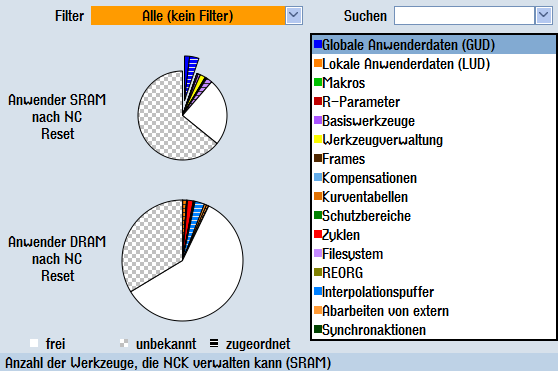
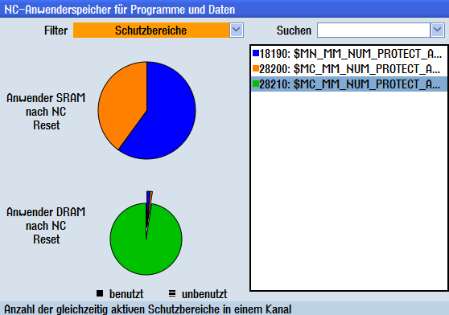

Sie haben die Möglichkeit, sich die statische und dynamische Speicherbelegung für jedes Anwenderspeicherdatum anzusehen.
Vorgehensweise
 | 1. | Das Fenster "NC-Anwenderspeicherdaten für Programme und Daten" ist geöffnet. |
| | 2. | Positionieren Sie den Cursor auf das Anwenderspeicherdatum, zu dem Sie sich detaillierte Angaben zur Speicherbelegung anzeigen lassen wollen. |
| | 3. | Drücken Sie den Softkey "Anzeigen". |
| | | Es werden je nach Filterauswahl sämtliche Anwenderspeicherdaten oder eine gefilterte Auswahl an Speicherdaten angezeigt. |
| | 4. | Drücken Sie den Softkey "Liste mit Details". In der unteren Hälfte des Fensters wird eine Auflistung der Arbeitsspeicher (SRAM und DRAM) für das gerade angewählte Speicherdatum sowie für das gesamte System angezeigt. |
| | 5. | Drücken Sie den Softkey "Symbol anzeigen", um das Speicherdatum als symbolischen Namen anzuzeigen. |
| | | - ODER - |
| | | Drücken Sie den Softkey "MD Text anzeigen", um das Speicherdaum mit Maschinendatum und Bezeichner anzuzeigen.
|
| | 6. | Wählen Sie in der Auswahlliste "Filter" den Eintrag "Alle (keine Filter)" und drücken Sie den Softkey "Übersicht". |
| | |  Übersicht aller Anwenderspeicherdaten Zurodnung der globalen Anwenderdaten (GUD) Sie erhalten eine Übersicht aller zugeordneten Speicherdaten für den dynamischen und statischen Speicher (DRAM und SRAM) in Form einer Auflistung. In zwei Tortendiagrammen werden die Anteile der Anwenderdaten im dynamischen und statischen Speicher angezeigt. Die in der Liste selektierten Anwenderdaten werden herausgehoben. Zugeordneten Anteile werden durch Schraffierung kenntlich gemacht. Zusätzlich wird jeweils der freie Speicherplatz angezeigt. |
| | | - ODER - |
| | | Wählen Sie in der Auswahlliste "Filter" den Eintrag "Schutzbereiche". |
| | |  Übersicht der benutzten Schutzspeicherdaten Sie erhalten eine Übersicht der Verteilung der benutzten und unbenutzten Schutzspeicherdaten auf SRAM und DRAM. Das selektierte Speicherdatum wird herausgehoben. |
| | | |